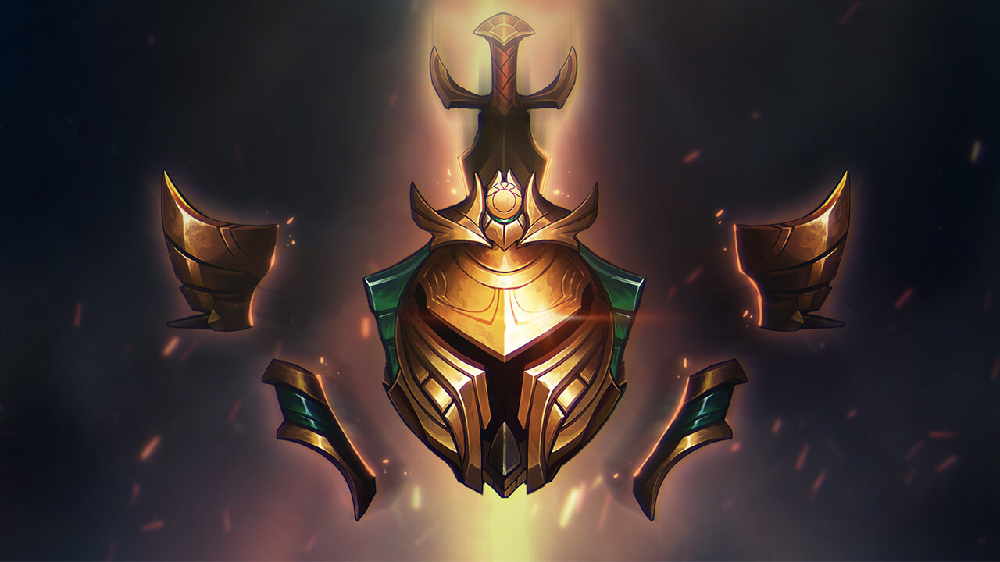

- 로딩 화면 채팅
- 드래곤 vs 내셔남작
- [개발 인사이드] 랭크 시스템 현황
- 개발자 스케치 - 사일러스
[개발 인사이드] 랭크 시스템 현황

요약: 랭크 시스템의 변경사항 일부, 특히 개편된 배치 시스템 등에 대한 반응과 포지션별 대전 매칭의 영향은 긍정적인 부분이 많았지만, 포지션 랭크에 대한 반응은 그만큼 좋지 않았습니다. 따라서 3월 13일에 한국과 북미에서 포지션 랭크 시범 운영을 종료하고 해당 시스템의 도입을 전면 중단할 예정입니다. 또한 다이아몬드 이상 구간에서 발생하는 대전 매칭과 랭크 관련 문제에 대한 조사가 끝났습니다. 문제 해결을 위해 부득이 3월 말경 마스터 이상 플레이어를 모두 마스터 티어 0LP로 설정하고 다이아몬드 플레이어는 한 단계씩 강등될 예정입니다. (다이아몬드 IV 플레이어는 변동 없습니다.)
출처 : 응답하라 라이엇